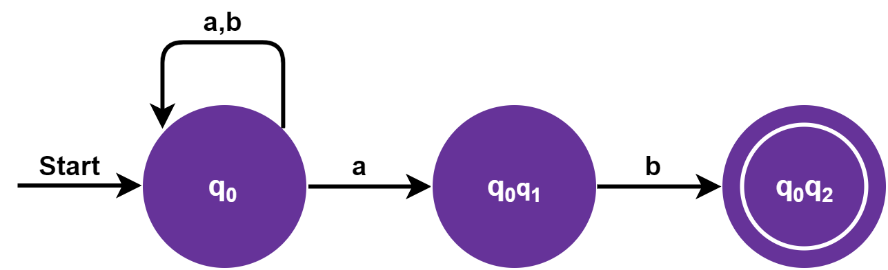
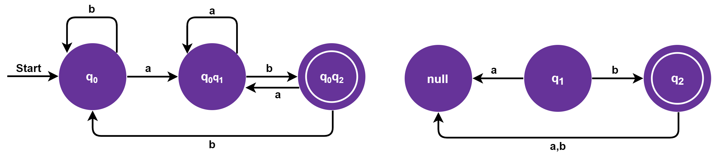
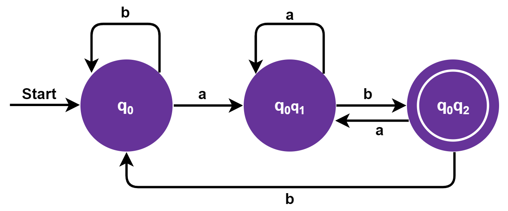

OVERVIEW
Finite Automata adalah mesin automata dari suatu Bahasa regular. Finite Automata memiliki jumlah state yang banyaknya berhingga dan dapat berpindah-pindah dari suatu state ke state yang lainnya. Finite Automata dibagi menjadi Deterministic Finite Automata (DFA) dan Non Deterministic Finite Automata (NFA).
DEFINISI DFA DAN NFA
DFA (Deterministic Finite Automata)
DFA adalah suatu mesin yang terdiri dari finite number of state, Salah satu state akan berfungsi sebagai intitial state. DFA juga mensyaratkan minimal terdapat satu accepted state. Mesin akan menerima input stream berupa simbol atau alfabet yang datang secara sequential. Mekanisme trasisi pada mesin akan memperhatikan current input dan current state. DFA adalah 5 tupel dimana:
- Q : himpunan state atau kedudukan
- Σ : himpunan simbol input
- ∂ : fungsi transisi, dimana ∂ € Q x -> Σ Q
- S : State awal (intitial state)
- F : himpunan state akhir (Final State)
NFA (Nondeterministic Finite Automata)
NFA adalah salah satu bagian dari otomata berhingga atau FSA (Finite State Automata). Pada NFA dimungkinkan satu simbol menimbulkan transisi ke lebih dari satu kondisi dan memberikan beberapa kemungkinan gerakan sehingga keluarannya tidak dapat dipastikan. Selain itu dimungkinkan juga terjadinya transisi spontan atau transisi –ε. NFA didefenisikan sebagai M yang merupakan sebuah koleksi dari 5 obyek (Q, Σ, s, F, ∆) dimana:
- Q adalah sebuah himpunan hingga dari kedudukan-kedudukan.
- Σ adalah sebuah abjad masukan.
- s adalah salah satu kedudukan di dalam Q yang ditetapkan sebagai kedudukan permulaan.
- F adalah sebuah koleksi dari kedudukan-kedudukan yang diterima atau final (koleksi / himpunan dari kondisi akhir).
- ∆ adalah sebuah relasi pada (Q x Σ) x Q dan dinamakan relasi transisi.
TAHAPAN MENGKONVERSI NFA KE DFA
Adapun tahapan dari mengonversi NFA ke DFA yaitu sebagai berikut:
- Langkah 1: Awalnya Q'= ϕ
- Langkah 2: Tambahkan q0 NFA ke Q'. Kemudian temukan transisi dari state awal ini
- Langkah 3: Dalam Q', temukan kemungkinan set of state untuk setiap simbol input. Jika kumpulan state ini tidak ada di Q', maka tambahkan ke Q'
- Langkah 4: Di DFA, final state adalah semua state bagian yang berisi F (final state NFA)
KONVERSI NFA KE DFA
Pada bagian ini, kita akan membahas metode untuk mengubah NFA menjadi DFA yang setara. Di NFA, ketika input tertentu diberikan ke status saat ini, mesin pergi ke beberapa status. Ini dapat memiliki nol, satu atau lebih dari satu gerakan pada simbol input tertentu. Di sisi lain, di DFA, ketika input tertentu diberikan ke status saat ini, mesin hanya beralih ke satu status. DFA hanya memiliki satu gerakan pada simbol masukan tertentu. Misalkan, M = (Q, ∑, δ, q0, F) adalah NFA yang menerima bahasa L (M). Harus ada DFA ekivalen yang dilambangkan dengan M '= (Q', ∑ ', q0', δ ', F') sehingga L (M) = L (M ').
CONTOH KASUS
Konversi NFA berikut menjadi DFA!

Tabel transisi:
| State | a | b |
|---|---|---|
| -> q0 | {q0, q1} | q0 |
| q1 | - | q2 |
| *q2 | - | - |
Sekarang kita akan mendapatkan transisi δ' untuk status q0:.
δ'([q0], a) = [q0, q1] (new state generated)
δ'([q0], b) = [q0]
Transisi δ' untuk status q1 diperoleh sebagai:
δ'([q1], a) = [-]
δ'([q1], b) = [q2]
Transisi δ' untuk status q2 diperoleh sebagai:
δ'([q2], a) = [-]
δ'([q2], b) = [-]
Sekarang kita akan mendapatkan transisi δ' pada [q0, q1]:
δ'(q0, q1], a) = δ(q0, a) ∪ δ(q1, a)
= {q0, q1} ∪ {-}
= [q0, q1]
δ'(q0, q1], b) = δ(q0, b) ∪ δ(q1, b)
= {q0} ∪ {q2}
= [q0, q2] (new state generated)
Sekarang kita akan mendapatkan transisi δ' pada [q0, q2]:
δ'(q0, q2], a) = δ(q0, a) ∪ δ(q2, a)
= {q0, q1} ∪ {-}
= [q0, q1]
δ'(q0, q2], b) = δ(q0, b) ∪ δ(q2, b)
= {q0} ∪ {-}
= [q0] (new state generated)
Keadaan [q0, q2] juga merupakan keadaan akhir karena berisi keadaan akhir q2. Tabel transisi untuk DFA yang dibangun adalah:
| State | a | b |
|---|---|---|
| -> [q0] | [q0,q1] | [q0] |
| [q1] | - | [q2] |
| *[q2] | - | - |
| [q0,q1] | - | [q0,q2] |
| *[q0,q2] | [q0,q1] | [q0] |
Diagram transisi akan menjadi:.

Dari diagram transisi state q0, q2 dan null tidak bisa mencapai dari state awal, sehingga dihasilkan DFA dengan:
Q = {q0, q0q1, q0q2}
∑ = {a,b}
S = q0
F = q0q2
Diagram transisi:

Referensi
Binus University: Teknik Konpilasi - Konfersi NFA ke DFA
JavaTPoint: Conversion from NFA to DFA
Sri Handayaningsih: Konversi NFA ke DFA